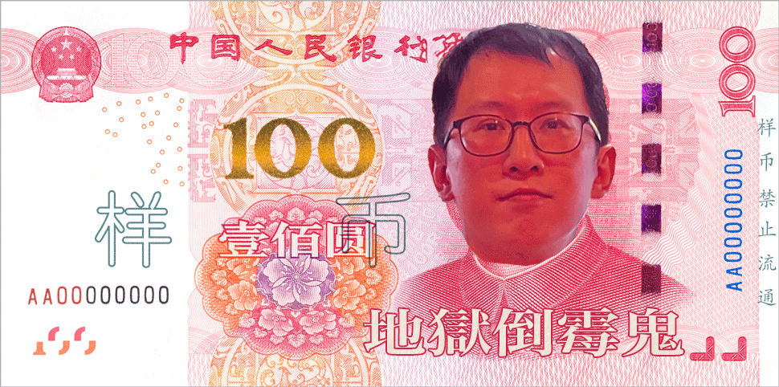

2025/7/2
7/1四場激戰結束！Vivi朝酒晚舞王者歸來！(AI生成)
昨晚四場同時開打的比賽結果震撼出爐！逃生入口C以21:11擊敗場人生揪難，展現客場作戰實力並受惠於飲酒加成優勢；Vivi朝酒晚舞與一鏢開天門激戰成13:13平手，Vivi朝酒晚舞憑藉飲酒加成最終以18:13險勝，證明其韌性十足；酒空組對戰逃生入口A的比賽中，酒空組憑藉客場飲酒加成以21:10大勝逃生入口A，阿堯再次展現王者風範；Jack則在主場迎戰海盜揪硬，憑藉飲酒加成優勢以16:11擊敗對手，展現主場威力。排行榜再度洗牌！Vivi朝酒晚舞強勢反彈以297分重新登頂第一寶座，酒空組294分緊追在後屈居第二，僅3分之差！海盜揪硬277分穩居第三，Jack 237分位居第四，人生揪難208分排名第五，逃生入口A 204分位居第六，一鏢開天門187分排名第七，逃生入口C 168分依然墊底。個人勝場方面，酒空組阿堯以71場勝利進一步擴大領先優勢，一鏢開天門飛54場穩居第二，Vivi朝酒晚舞猴子49場升至第三，逃生入口A華華與酒空組瘦子各47場並列第四。地獄倒霉鬼榜單小幅調整！人生揪難小傅以30% (30-9)成為新的最悲情選手，人生揪難亮亮32.14% (28-9)緊隨其後，運氣稍有好轉但仍在地獄邊緣掙扎，酒空組虎哥與逃生入口A加成均為33.33%並列第三，逃生入口C Lucas 34.09% (44-15)新進榜單，證明先攻運氣依然是聯賽的重要變數！
2025/6/25
6/24四場終極決戰！酒空組完美逆襲登頂王座！(AI生成)
昨晚四場同時開打的終極決戰結果震撼出爐！逃生入口Bar見證了兩場壓倒性勝利：逃生入口A內戰中逃生入口C憑藉飲酒加成優勢以26:10完全碾壓逃生入口A；一鏢開天門對戰酒空組的關鍵戰役中，酒空組同樣展現王者實力以26:10血洗一鏢開天門，受惠於飲酒加成的威力。Vivi Bar則上演了海盜揪硬22:14力克Vivi朝酒晚舞的精彩對決，海盜揪硬在Vivi朝酒晚舞擁有飲酒加成的劣勢下仍能大勝，展現強大實力。酒窩海盜聯盟的最後一戰更是驚人，Jack與人生揪難激戰至18:18平手，兩隊勢均力敵難分高下！排行榜歷史性大洗牌！酒空組終於完成華麗逆襲，以276分登頂第一寶座，結束了Vivi朝酒晚舞的統治時代！Vivi朝酒晚舞273分屈居第二，僅以3分之差痛失王座。海盜揪硬258分穩居第三，Jack 220分位居第四，人生揪難197分排名第五，逃生入口A 186分位居第六，一鏢開天門175分排名第七，逃生入口C 143分墊底。個人勝場方面，酒空組阿堯以67場勝利進一步鞏固王者地位，一鏢開天門飛50場穩居第二，酒空組瘦子47場排名第三，Vivi朝酒晚舞猴子45場位居第四，逃生入口A華華42場進入前五。地獄倒霉鬼榜單大洗牌！人生揪難亮亮以慘烈的24% (25-6)依然穩坐最悲情選手寶座，人生揪難小傅30% (30-9)緊隨其後，酒空組虎哥、逃生入口A加成與Vivi朝酒晚舞怪頭三人並列第三，均為33.33%的先攻率，證明運氣女神依然捉摸不定！
2025/6/18
6/17四場激戰結束！酒空組緊追不捨，Jack躍升第四(AI生成)
昨晚四場同時開打的比賽結果出爐！逃生入口A客場挑戰一鏢開天門，在No.5憑藉飲酒加成優勢取得勝利；酒空組主場迎戰海盜揪硬，在逃生入口Bar展現強大實力獲勝；Vivi朝酒晚舞客場對戰人生揪難，在酒窩海盜聯盟憑藉飲酒加成優勢取勝；Jack則在主場Jack迎戰逃生入口C，憑藉飲酒加成優勢險勝。排行榜再度更新！Vivi朝酒晚舞以259分持續領跑，酒空組強勢追趕至250分穩居第二，海盜揪硬236分排名第三。最大亮點是Jack隊大躍進至202分升上第四名！人生揪難179分排名第五，逃生入口A 176分位居第六，一鏢開天門165分排名第七，逃生入口C 117分墊底。個人勝場方面，酒空組阿堯以61場勝利進一步擴大領先優勢，一鏢開天門飛與酒空組瘦子各47場並列第二，Vivi朝酒晚舞猴子45場排名第四，逃生入口A華華41場進入前五。地獄倒霉鬼榜單中，人生揪難亮亮雖然先攻率上升至27.27%但依然是聯盟最悲情選手，逃生入口C的Lucas 31.43%緊隨其後，逃生入口A加成與人生揪難小傅各33.33%並列第三，海盜揪硬船長35.71%排名第五，證明運氣在飛鏢比賽中依然扮演重要角色！
2025/6/11
6/10四場激戰結束！酒空組強勢崛起挑戰王座(AI生成)
昨晚四場同時開打的比賽結果出爐！Jack客場挑戰逃生入口A，憑藉飲酒加成優勢在逃生入口Bar取得勝利；酒空組主場迎戰人生揪難，在酒窩海盜聯盟展現強大實力獲勝；Vivi朝酒晚舞客場對戰逃生入口C，在逃生入口Bar憑藉飲酒加成優勢取勝；海盜揪硬則在醉販主場迎戰一鏢開天門，憑藉飲酒加成優勢險勝。排行榜再度洗牌！Vivi朝酒晚舞以239分持續領跑，但酒空組強勢崛起至226分升上第二，與第三名海盜揪硬224分形成激烈競爭。Jack隊以183分位居第四，人生揪難163分排名第五，一鏢開天門160分位居第六。個人勝場方面，酒空組阿堯以56場勝利進一步擴大領先優勢，一鏢開天門飛45場穩居第二，Vivi朝酒晚舞猴子與酒空組瘦子各42場並列第三。地獄倒霉鬼榜單中，人生揪難亮亮以21.05%的先攻率依然是聯盟最悲情選手，逃生入口C的Lucas 30%緊隨其後，證明運氣在飛鏢比賽中的重要性！
2025/6/4
6/3四場激戰結束！排行榜大洗牌(AI生成)
昨晚四場同時開打的比賽結果出爐！海盜揪硬在主場迎戰逃生入口A，憑藉飲酒加成優勢取得勝利；酒空組客場挑戰逃生入口C，阿堯再次展現王者風範帶領球隊獲勝；Jack作客Vivi Bar面對衛冕冠軍Vivi朝酒晚舞，雖有飲酒加成但仍敗下陣來；人生揪難則在No.5與一鏢開天門激戰，最終憑藉飲酒加成險勝。排行榜大幅更新！Vivi朝酒晚舞以206分持續領跑，海盜揪硬大躍進至197分升上第二，酒空組193分緊追在後排名第三。最大驚喜是人生揪難躍升至第四名達159分，而Jack則滑落至第五157分。個人勝場方面，酒空組阿堯以48場勝利進一步擴大領先優勢，一鏢開天門飛42場穩居第二，Vivi朝酒晚舞猴子36場上升至第三。地獄倒霉鬼榜單中，人生揪難亮亮以23.53%的先攻率依然是聯盟最悲情選手，逃生入口C的Lucas和人生揪難克林也新進榜單，證明運氣在飛鏢比賽中的重要性！
2025/5/28
5/28排行榜更新(AI生成)
排行榜最新更新！Vivi朝酒晚舞以183分持續擴大領先優勢，酒空組上升至第二位達166分，海盜揪硬與Jack並列第三名分別獲得151分和149分，形成激烈競爭。地獄倒霉鬼榜再更新，這次最慘的仍是人生揪難的亮亮，以慘烈的25%（16-4）穩坐聯盟最悲情選手寶座，緊接著是海盜揪硬的胖胖，先攻率僅30%（10-3），常常還沒開火就先挨打。逃生入口A的Terry也沒好到哪去，32%（25-8）的數字讓人心疼，而人生揪難的小傅和海盜揪硬的船長雖然同為33.33%（分別為27-9與33-11），但仍然沒能脫離倒霉榜的泥淖，連船長都得低頭認命，證明這份榜單沒在看資歷，只看運氣！
2025/5/21
5/21排行榜更新(AI生成)
排行榜最新更新！Vivi朝酒晚舞以驚人的160分穩固領先地位，海盜揪硬以150分超越酒空組升至第二，酒空組145分排名第三，Jack隊則以134分位居第四。一鏢開天門和逃生入口A均有顯著進步，分別達到114分和103分。個人勝場方面，酒空組阿堯以36場勝利繼續領跑，一鏢開天門飛以32場緊隨其後，酒空組瘦子29場排名第三。地獄倒霉鬼榜單也迎來更新，人生揪難的亮亮以26.67%的先攻率成為新的倒霉鬼之首，酒空組范姜姐和逃生入口A加成也都低於30%的先攻率，繼續在地獄中煎熬。
2025/5/14
5/14排行榜更新(AI生成)
排行榜再度更新！Vivi朝酒晚舞以驚人的141分繼續穩固第一寶座，酒空組強勢崛起至第二名達128分，Jack隊以121分位居第三，海盜揪硬以116分排名第四。人生揪難突破百分大關達到100分，首次進入前五。個人勝場方面，酒空組阿堯持續擴大領先優勢達到32場勝利，一鏢開天門飛、酒空組瘦子與Jack的Stan三人並列第二名各24場勝利，形成激烈競爭。地獄倒霉鬼榜單新增了人生揪難阿肥，僅28.57%的先攻率讓他苦不堪言，而逃生入口A的加成與健龍繼續蝸居榜首，先攻機率仍低於25%，真是命運多舛！更驚人的是，即使Terry和船長的先攻率有所上升，仍然無法擺脫倒霉鬼的命運，顯示本季聯賽運氣的重要性。
2025/5/7
5/7排行榜更新(AI生成)
排行榜已更新！Vivi朝酒晚舞以117分繼續領先，海盜揪硬以105分穩居第二，酒空組以103分排名第三，Jack以96分位居第四。個人勝場榜單上，酒空組阿堯以27場勝利遙遙領先，一鏢開天門飛以20場位居第二，Jack的Stan和Vivi朝酒晚舞的猴子各19場並列第三。地獄倒霉鬼榜單上，逃生入口A的加成以慘淡的21.43%先攻率成為最大受害者，健龍同樣遭遇噩運僅獲得23.08%先攻機會，Terry更是連續21場比賽只獲得6次先攻機會。Lucas也難逃厄運，17次出場只有5次先攻。就連海盜揪硬的船長也深陷地獄，23場比賽中只有7次先攻機會，慘遭對手蹂躪。
2025/4/30
4/30排行榜更新(AI生成)
排行榜已更新！Vivi朝酒晚舞以102分遙遙領先成為冠軍，Jack隊與酒空組並列第三名（77分），阿堯保持個人勝場王寶座達到21場，而逃生入口A的加成以21.43%成為新一屆地獄倒霉鬼王者！
2025/4/23
排行榜更新(AI生成)
難找的聯賽排行榜已更新！恭喜酒空組阿堯登上個人勝場排行榜首位，同時逃生入口A的健龍成為新的地獄倒霉鬼王者，先攻機率僅10%！
2025/4/16
網頁改版
難找的聯賽網頁2.0beta版先上線一下，賽程的鏈結還是壞的我之後再來修掰噗
2024/11/5
聯賽開始
難找的聯賽第三届正式開始！
2024/10/15
阿淦幣即日起開始發售
第二屆阿淦因其優異的手氣榮獲地獄倒霉鬼殊榮，即日起凡於於比賽店家持100元阿淦幣消費即可換取一杯shot。
